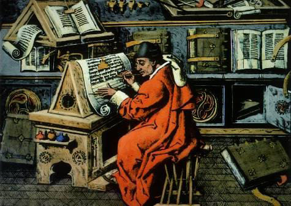
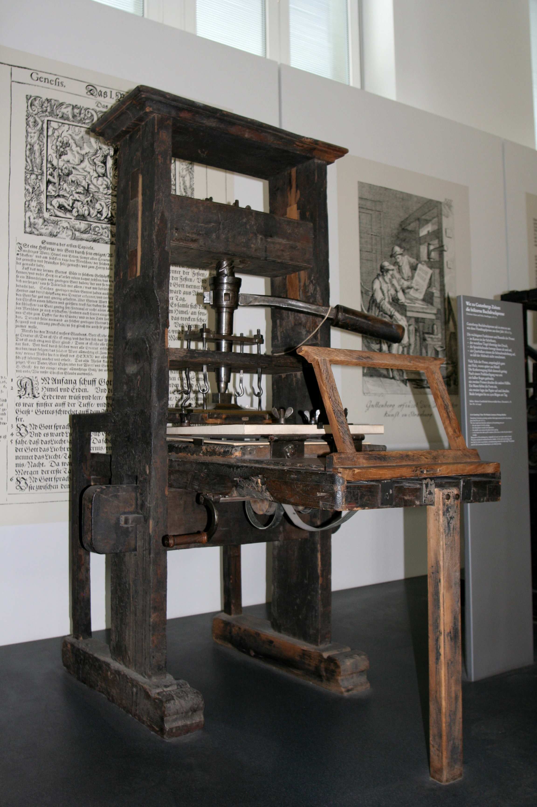

O termo tipografia surgiu no século XV, com a invenção da prensa de tipos móveis por Johannes Gutenberg.
Parte de quem produzia os livros eram os Monges Copistas, que passavam horas copiando textos à mão.
Com a prensa de tipos móveis, Gutenberg revolucionou a produção de livros, tornando-a mais rápida e acessível.

A tipografia é a arte de dispor texto de forma a torná-lo legível, atraente e apropriado para a comunicação da mensagem.
Os glifos são as representações gráficas dos caracteres. Cada letra, número ou símbolo é um glifo.
Uma família tipográfica é um conjunto de glifos que compartilham características de design comuns. Isso inclui variações de peso, largura e estilo.
Por exemplo: a família tipográfica Open Sans inclui diferentes pesos, (de 300 a 800) como: light, (300) regular, (400) semi-bold, (600) bold (700) e extra-bold (800).